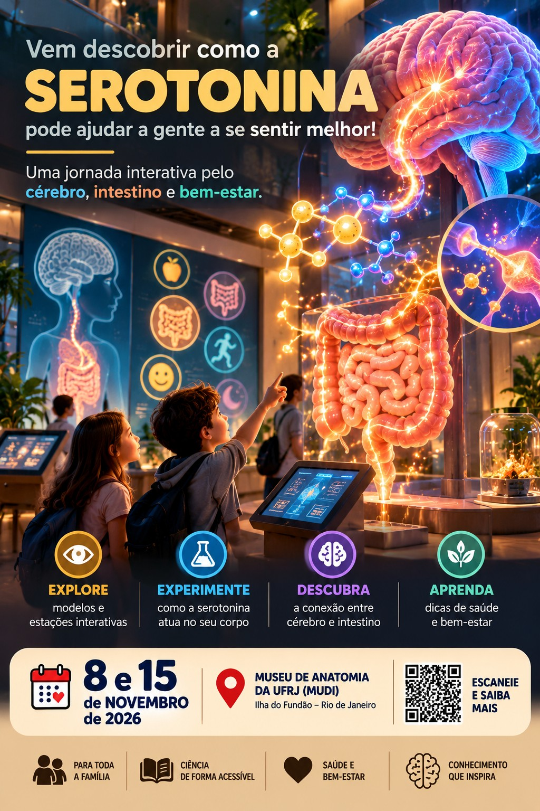

Preencha os campos e gere a ficha final.
Não é “fazer IA”. É comunicar ciência.
Hoje todos treinam divulgação, arte, vídeo e experiência. Depois do sorteio oficial, cada equipe conhece o espaço físico do MUDI e só então desenvolve a proposta definitiva.
1
Comunique
Traduza ciência sem distorcer.
2
Crie
Construa uma identidade visual.
3
Anime
Transforme a arte em vídeo curto.
4
Conecte
Una físico + estudante + digital.
Do conteúdo científico ao convite

Um exemplo de transformação
O conteúdo continua científico, mas a linguagem visual convida o público a descobrir. A estética é acolhedora para crianças e famílias, sem parecer material para criança pequena.
- Gancho: uma pergunta que desperta curiosidade.
- Ciência: uma ideia correta e compreensível.
- Experiência: mostrar que haverá algo para explorar.
- Convite: data, local e chamada para participar.
Evite promessas de saúde e simplificações como “hormônio da felicidade”. A revisão científica vem antes da publicação.
Quatro missões em 2 horas
Divulguepúblico, gancho, card e convite
Dê vidavídeo de 15–20 s
Brinquesimule um tema
Saia da telafísico + digital
Pitchapresente o protótipo
🎲 Sorteio de tema para simulação
Este sorteio é apenas para treinar hoje. Não define o grupo oficial do projeto.
Clique para sortear uma das cinco frentes científicas.
Explore os ambientes
Na oficina, o tema serve para simular. A atividade definitiva depende do sorteio e do reconhecimento do espaço físico.
Crie a chamada
Sua estrutura aparecerá aqui.
Da imagem ao vídeo
Use a arte como ponto de partida. O vídeo deve convidar, explicar ou provocar uma pergunta.
0–3 sGancho
3–10 sDescoberta visual
10–15 sExperiência
15–20 sConvite + datas
O que combina com a sua proposta?
Escolha as características da experiência. O aplicativo indica um caminho: jogo, apresentação interativa ou app.
Responda e veja a sugestão.
Laboratório de experiência
O protótipo aparecerá aqui.
Do físico ao digital
Se você ainda não conhece o recurso físico, escreva “a confirmar no MUDI”.
🔎 Caça Científica AR — estilo caça de criaturas
Demonstração: a câmera vira o cenário. Um personagem científico aparece na tela e o visitante precisa encontrá-lo e tocar para “capturar”. Depois, recebe uma pergunta ou pista científica. É uma simulação em realidade aumentada leve; não reconhece objetos reais.
Exemplo de uso: encontrar moléculas, órgãos, pistas ou personagens científicos no espaço do museu.
Prompt de arte 3D museográfica
Seu prompt aparecerá aqui.